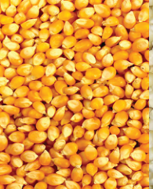
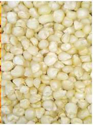
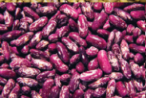
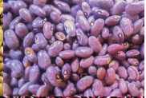
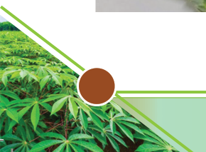

Agriculture for Secondary Schools
percentage, adaptability to local conditions, resistance to pests and diseases,
yield potential, and maturity period. Farmers can increase crop performance and,
eventually, high yield by focusing on these factors.
Planting crops
Planting a crop is an operation that follows after land preparation. The practice
involves placing a planting material in the soil or other planting media to
initiate the growth or establishment of a crop. Planting is sometimes referred to
as propagation. However, the process is called sowing when seeds are used as
planting material. Planting crops using seeds is also termed generative or sexual
propagation while establishing crops using vegetative materials is called asexual
or vegetative propagation. Crops established by sowing seeds include maize,
groundnuts, sorghum, millets, wheat, cowpeas, and watermelon. Crops such as
yams, sugar cane, ginger, sisal, cocoyam/taro, sweet potatoes, and cassava are
typically established by planting vegetative parts. Therefore, the farmer often has
to opt for using seeds or vegetative planting materials, depending on the crop and
the simplicity of the crop, to germinate (for seeds) or sprout (for other vegetative
materials). Figure 1.1 (a)- (f) represents some of the planting materials; study
them, then carry out an Activity 1.4.
Figure 1.1 (a)
Figure 1.1 (b)
Figure 1.1 (c)
Figure 1.1 (d)
6
Student’s Book Form Two
